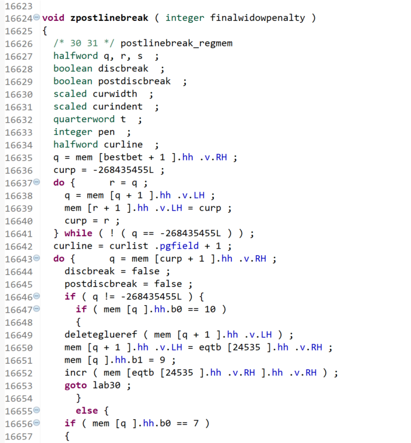

How Overleaf created the TeX primitive reference data
This article describes the methods and techniques used to produce the two cross-reference tables of TeX primitive commands:
This information is provided for readers interested in the finer details, but is not a prerequisite for using the cross-reference table itself. To address the needs of different readers we provide a very short summary version together with a longer explanation for those wishing to explore the issues in greater depth.
Short summary/overview version
To build the cross-reference table, Overleaf processed the source code of 9 TeX engines to extract the list of primitives supported by each one: that process produced 9 text files (1 file per TeX engine). Those 9 sets of primitives were combined to create a “master list” which was, in effect, a union of the individual sets of primitives: yielding a total of about 1000 unique primitives spread across the various engines. For each engine, its own list of primitives was cross-referenced against the master file (the set of all commands) to determine which of those ~1000 commands it supported: those comparisons are tabulated in the following two tables:
“Building software” 101: What does that mean?
Throughout the remainder of this article we reference the notion of “building TeX engines”, which may be an unfamiliar concept if you aren’t a programmer, or don’t program in compiled languages such as C or C++. For our purposes, building software—i.e., TeX engines—is the process of creating an executable TeX program from its constituent parts—the source code files written in the programming language used to develop the program.
Full version: Want the details? Read on...
Every TeX-based typesetting engine supports a “dialect” of the TeX language: a particular set of primitive commands which control the typesetting features of each engine and provide the building blocks for creating/defining macros: user-defined sequences of commands. Every macro, whether it is written for LaTeX, plain TeX or any other macro package is, ultimately, constructed from primitive commands—although you may need to drill-down quite a long way, through layers of additional macros, before you reach the “bedrock layer” of TeX primitives. The set of 9 TeX engines analyzed to produce the primitive-command reference data do, of course, have many commands in common but each TeX engine also has its own primitive commands, added by its developers, to provide support for the features specific to that “version” of TeX.
A TeX engine’s primitive commands are built into the executable TeX software: primitives are not macros constructed by users, they are fundamental, indivisible/atomic, instructions used to control the typesetting behaviour of each engine. Consequently, the most reliable way to create a definitive list of primitive commands supported by any TeX engine is to examine the actual source code from which the executable TeX programs are built (compiled) and to extract the list of primitives defined in the source code. Sounds like it should be easy, right? However, due to the 40-year development history of TeX, exploring/examining the source code files of TeX engines (except LuaTeX) is not particularly straightforward. The reason for those complexities lay in the tools, programming language (Pascal), and methodology (literate programming) that Knuth used to write the original TeX source code—from which all other engines are, ultimately, descended.
We note an exception for LuaTeX because its core engine code was re-written in C to remove the use of Pascal and other legacy complexities detailed below (Web2C); consequently, although LuaTeX’s source code is substantial, the way that it is “packaged” and distributed is far more comprehensible compared to other TeX engines. As a consequence, and based on the workflow/processes used to build them from source code, it is convenient to group TeX engines into two categories:
- LuaTeX: custom (more modern) build process
- All other engines: legacy (Web2C) build process
The context of legacy code: Why building (most) TeX engines is complex
As we’ll explore below, Knuth released his original TeX source code as a single, monolithic file called tex.web which, once every 7 years, Knuth continues to update to fix any remaining bugs—no new features are ever added, it is purely a bug-fixing exercise.
The file extension of TeX’s source code (.web) is unlikely to be familiar and you may wonder which language Knuth used to write TeX? The answer is Pascal but the .web extension needs a little more explanation. Knuth developed a programming methodology that he called literate programming in which a program’s source code and documentation are combined together and released as a single composite file (code plus documentation) with extension .web: that file type is referred to as a WEB file. We explain WEB files in a little more detail below.
Creating new TeX engines: Knuth’s stipulations
Although Knuth has long made his TeX source code (tex.web) freely available to all, he did, as is his absolute right, make a key stipulation that his (tex.web) source code must not be directly edited/modified and re-distributed with the program name “TeX”. In the source code he writes:
% This program is copyright (C) 1982 by D. E. Knuth; all rights are reserved.
% Copying of this file is authorized only if (1) you are D. E. Knuth, or if
% (2) you make absolutely no changes to your copy. (The WEB system provides
% for alterations via an auxiliary file; the master file should stay intact.)
and also:
If this program is changed, the resulting system should not be called
`\TeX'; the official name `\TeX' by itself is reserved
for software systems that are fully compatible with each other.
A special test suite called the ``\.{TRIP} test'' is available for
helping to determine whether a particular implementation deserves to be
known as `\TeX' [cf.~Stanford Computer Science report CS1027,
November 1984].
In essence: do not make changes by editing and distributing modified versions of the master TeX source code and continue to call it tex.web. If you do want to make changes, e.g., add new primitives etc, then you must apply those changes by making “alterations via an auxiliary file” and give your “derivative of TeX” program a name that distinguishes it from “TeX”, which, in typeset form (\(\mathrm\TeX\)), is a trademark of the American Mathematical Society.
The inheritance of legacy
Although there have been attempts to completely re-write TeX using modern programming languages and methodologies—such as the two Java-based initiatives New Typesetting System and εχTEX and others such as one in Clojure, none have been completely successful. The history of projects and initiatives designed to further develop TeX is an interesting topic and readers may wish to visit the UK TeX FAQ for further information.
Those non-LuaTeX initiatives which have also been successful, such as e-TeX, pdfTeX, XeTeX and other engines, have built directly on top of Knuth’s original code: taking his source code and “applying changes” to derive a new engine with additional capabilities—such as adding new primitives, producing PDF output, supporting UTF-8 text input and so forth. Whilst that route has lead to notable successes it also means that those derivative engines inherit the legacy code and development techniques that Knuth created 40 years ago.
The key takeaway here is that, apart from LuaTeX, most TeX engines derived from Knuth’s original source code are created by taking a single monolithic file (usually tex.web) and applying changes that generate yet another single monolithic file containing that new engine’s core source code. Advanced readers may wish to skip forward to the qualifying notes on pdfTeX and XeTeX.
Some additional TeX history/background
TeX’s moment-of-genesis was recorded in Knuth’s diary as 30 March 1977, now over 40 years ago. Internally, TeX is an extraordinarily complex program whose source code Knuth took great pains to document in exceptional detail. To do that Knuth developed a style of programming that he called literate programming in which a program’s source code and documentation are combined together and released as a composite file with extension .web (referred to as a WEB file). Knuth chose Pascal as the programming language for writing his TeX software and, not surprisingly, used the TeX typesetting language to write the final documentation. Consequently, the master source code of Knuth’s TeX is published as a single, monolithic, file called tex.web: a mixture of Pascal source code and TeX typesetting code for the documentation.
If a program is written using Knuth’s literate programming style/methodology (as are TeX, MetaFont, BibTeX and others) you need to pre-process the WEB file to extract the documentation or source code. To access the program’s documentation you process the WEB file (e.g., tex.web) with a utility called WEAVE which produces the documentation as a .tex file that you can typeset. To extract the source code in Pascal you use another utility called TANGLE which outputs a file with extension .p that contains Pascal source code.
At the time of writing (early 2019) the latest version of Knuth’s TeX is 3.14159265, dated January 2014. Again, note that Knuth’s TeX source code is contained in just a single file containing around 25,000 lines of TeX/Pascal code!
From Pascal to C
During the 40+ years that have elapsed since the genesis of TeX, Pascal fell out of fashion and today few, if any?, people now contemplate building TeX from its original Pascal source code. To circumvent Knuth’s use of Pascal, a workflow called Web2C was designed (circa 1987) in which TeX’s Pascal source code is mechanically (i.e., via software) converted to its equivalent in C code, which is then used to compile TeX and build the executable program. It works well but the only downside is that the mechanically-generated C source code is not intended for casual human inspection: it is extremely verbose and almost impenetrable, being destined for compilers, not people—here is a screenshot showing a small fragment of the C code generated from TeX’s Pascal source:

Another Knuth-ism: WEB change files
As noted above, to build on Knuth’s original source code you “apply changes” or, in Knuth’s words make “alterations via an auxiliary file”: but what does this actually mean? Enter the change file mechanism.
Change files: the mechanism for creating new TeX engines
Developers wanting to extend Knuth’s TeX in some way, i.e., to build on Knuth’s original work, typically wish to create a whole new “version” of TeX or provide an extension that can be added to any TeX engine. Examples of extensions include SyncTeX and EncTeX—SyncTeX, for example, is a very useful extension which is now included in all TeX engines. The need for EncTeX has largely been superseded by the evolution of Unicode-aware TeX engines—but note that EncTeX is built into pdfTeX.
Whether the desire is to produce a new “version” of TeX (i.e., a derivative of Knuth’s original TeX), or to create an extension, its developers start with Knuth’s original source code and apply the modifications necessary to create a new TeX engine (or an add-in extension). However, as noted above, anyone wishing to modify the behaviour of TeX needs to do that using “alterations via an auxiliary file” because those changes/modifications must not be applied by directly editing Knuth’s original source code: developers are required to use the so-called WEB change file mechanism. The code to modify Knuth’s TeX is written in the WEB “language” and saved to one or more code files (called change files) which are subsequently merged with Knuth’s original, untouched, master source code. That merging process creates a new composite WEB file that now contains the core source code of the new/modified TeX-based software. Change files often have extension .ch but in practice, they can have any extension desired by the developers.
How do you use/apply change files?
Nowadays, the easiest way to apply change files and modify a “master” WEB file is with a utility program called TIE. For example, suppose you wanted to modify Knuth’s TeX by adding, say, a couple of new primitives or you wanted to change the behaviour of an existing (standard) TeX primitive. You would write your code (in Pascal!) using the WEB system of literate programming and save it to a file called, say, myprim.ch. The next step is to merge your code (in myprim.ch) with Knuth’s master source file tex.web and produce a new, composite, WEB file representing what we’ll call mytex.web. To do this you simply execute the TIE program like this:
tie -m mytex.web tex.web myprim.ch
Assuming the merge is successful, this will result in a new WEB file, mytex.web, leaving Knuth’s master source file tex.web completely unaltered, as required.
Let’s now assume that someone else likes the changes you made and wants to modify your work to add their changes on top of, or in addition to, what you have done. Rather than distributing your modified version of TeX (mytex.web) you decide to publish/share only the change file, myprim.ch. Anyone wanting to build on your work can now create and share their change file called, say, moreprim.ch which extends your code in some way. Anyone else wanting to take advantage of both change files can now generate a new composite WEB file by merging both change files into Knuth’s original to generate yet another TeX program called, say, newmytex.web:
tie -m newmytex.web tex.web myprim.ch moreprim.ch
Real TeX systems: multiple change files
The above description of TIE is actually very close to the way in which many TeX engines are built in practice: they start with Knuth’s tex.web and add a succession of change files to generate the WEB source file for that engine. Each TeX engine requires its own particular set of change files, which have to be applied/processed (merged) in a strict order: get the order wrong and the merging process will fail because each change file in a sequence relies on changes introduced by change files appearing earlier in the chain.
Here is a sample run of TIE applying multiple change files to Knuth’s tex.web in order to generate ktex.web—the composite WEB file with modifications to Knuth’s TeX that make it ready (suitable) for conversion to C via the Web2C process. Note also the following:
tex.chis a very large change file which, among many things, modifies TeX to use Kpathsea;- the SyncTeX extension is added-in via multiple change files.
tie -m ktex.web tex.web tex.ch enctex.ch synctex-def.ch0 synctex-mem.ch0 synctex-mem.ch2 synctex-rec.ch0 synctex-rec.ch1 synctex-rec.ch2 tex-binpool.ch
This is TIE, CWEB Version 2.4.
Copyright (c) 1989,1992 by THD/ITI. All rights reserved.
(tex.web)
(tex.ch)
(enctex.ch)
(synctex-def.ch0)
(synctex-mem.ch0)
(synctex-mem.ch2)
(synctex-rec.ch0)
(synctex-rec.ch1)
(synctex-rec.ch2)
(tex-binpool.ch)
....500....1000....1500....2000....2500....3000....3500....4000....4500
....5000....5500....6000....6500....7000....7500....8000....8500....9000
....9500....10000....10500....11000....11500....12000....12500....13000
....13500....14000....14500....15000....15500....16000....16500....17000
....17500....18000....18500....19000....19500....20000....20500....21000
....21500....22000....22500....23000....23500....24000....24500....
(No errors were found.)
Aside: XeTeX and pdfTeX
By way of completeness, we should note that the build process for pdfTeX and XeTeX do not actually start with Knuth’s tex.web; instead they start with files called pdftex.web and xetex.web respectively: presumably because the changes are so extensive it makes more sense to share/publish WEB files that already contain the very significant modifications made to Knuth’s original code.
An example: e-upTeX
The Japanese TeX community has developed a number of TeX engines designed to cater for the complexities of typesetting Japanese text:
- pTeX: Knuth’s TeX engine extended to support Japanese typesetting;
- e-pTeX: A combination of e-TeX and pTeX (plus a few primitives introduced by pdfTeX);
- upTeX: A Unicode-aware version of pTeX plus extensions for better handling of CJK (Chinese, Japanese and Korean);
- e-upTeX: A combination (merge) of e-TeX and upTeX.
Generating the composite source file for e-upTeX
To create the composite WEB source file for e-upTeX (with SyncTeX) you start with Knuth’s tex.web but need to apply 26 individual change files, in the following order, to yield a single composite file from which the list of primitive commands can be extracted:
etex.ch, tex.ch0, tex.ch, tex.ech, etex.ch0,
ptex-base.ch, uptex-m.ch, euptex.ch0, eptex.ech,
etex.ch1, euptex.ch1, synctex-def.ch0, synctex-ep-mem.ch0,
synctex-mem.ch0, synctex-e-mem.ch0, synctex-ep-mem.ch1,
synctex-p-rec.ch0, synctex-rec.ch0, synctex-rec.ch1,
synctex-e-rec.ch0, synctex-p-rec.ch1, fam256.ch,
pdfstrcmp-eup-pre.ch, pdfutils.ch, pdfstrcmp-eup-post.ch,
tex-binpool.ch
Applying change files: which files and in which order?
As noted, it is critically important to apply/process change files in a strict order—but how do you find out which files are needed and the order in which to process them? Fortunately, that crucial information is recorded within files contained in the TeX Live distribution and an exploration of the TeX Live source code revealed the rules which govern the build requirements for each TeX engine. Following those rules Overleaf was able to reconstruct the composite WEB source code file for each TeX engine and extract a list of primitives for onward data processing.
And finally: How to extract the list of primitives?
Once the composite WEB file has been constructed, the task of extracting the list of primitives, using regular expressions, is straightforward because all primitive commands are defined (“registered”) using a single Pascal function called primitive(...). Here are some real examples taken from Knuth’s tex.web source code:
primitive("lineskip",assign_glue,glue_base+line_skip_code)
primitive("baselineskip",assign_glue,glue_base+baseline_skip_code)
primitive("parskip",assign_glue,glue_base+par_skip_code)
primitive("abovedisplayskip",assign_glue,glue_base+above_display_skip_code)
primitive("belowdisplayskip",assign_glue,glue_base+below_display_skip_code)
primitive("abovedisplayshortskip",assign_glue,glue_base+above_display_short_skip_code)
...
...
As you can see, the primitive(...) function is highly amenable to text processing with regular expressions: the name of the primitive being registered is in quotes ("...") along with additional data which classifies the behavour of each primitive (we won’t consider that in any detail). After extracting the list of primitives for each engine, that data was processed by some Lua scripts to generate HTML containing the tabulated results.
Returning to LuaTeX
We have noted that LuaTeX does not use the exact same build processes as the other 8 TeX engines. Having briefly explored the Web2C process, the conversion of Pascal to C and the change-file mechanism, we can now explain where LuaTeX differs: the developers of LuaTeX decided to dispense with the cumbersome process of converting Pascal to C—as noted in The LuaTeX Reference Manual:
...the compilation framework is web2c and we keep using that but without the Pascal to C step.
The core LuaTeX engine was re-written in C which means that its build process process is somewhat more standard and certainly much more convenient. One useful consequence is that the primitives supported by LuaTeX are nicely factored out into a separate C code source file which considerably eased the task of accessing/listing them.
Strictly speaking, we should also note that some of LuaTeX’s source code files use a variant of Knuth’s literate programming methodology, called CWEB, that is based on C and not Pascal.
Not just WEB files: other source code is required
After generating the composite WEB source file for any TeX engine (except LuaTeX), the Pascal source code has to be extracted and converted to C code but that is not the total solution. In addition to the C code generated from the WEB source (Pascal⮕C) most TeX engines also rely on (require) a number of additional ancillary source code files (libraries) that are typically written in C—such as Kpathsea. Ancillary source files (libraries) implement functionality that need not, or cannot, be written in WEB (Pascal). Anything written in the WEB “language” for TeX has to use the Pascal language which is subsequently extracted and converted to machine-generated C: if you don’t need to do that, why not write simply write it in C or C++ in the first place.
Overleaf guides
- Creating a document in Overleaf
- Uploading a project
- Copying a project
- Creating a project from a template
- Using the Overleaf project menu
- Including images in Overleaf
- Exporting your work from Overleaf
- Working offline in Overleaf
- Using Track Changes in Overleaf
- Using bibliographies in Overleaf
- Sharing your work with others
- Using the History feature
- Debugging Compilation timeout errors
- How-to guides
- Guide to Overleaf’s premium features
LaTeX Basics
- Creating your first LaTeX document
- Choosing a LaTeX Compiler
- Paragraphs and new lines
- Bold, italics and underlining
- Lists
- Errors
Mathematics
- Mathematical expressions
- Subscripts and superscripts
- Brackets and Parentheses
- Matrices
- Fractions and Binomials
- Aligning equations
- Operators
- Spacing in math mode
- Integrals, sums and limits
- Display style in math mode
- List of Greek letters and math symbols
- Mathematical fonts
- Using the Symbol Palette in Overleaf
Figures and tables
- Inserting Images
- Tables
- Positioning Images and Tables
- Lists of Tables and Figures
- Drawing Diagrams Directly in LaTeX
- TikZ package
References and Citations
- Bibliography management with bibtex
- Bibliography management with natbib
- Bibliography management with biblatex
- Bibtex bibliography styles
- Natbib bibliography styles
- Natbib citation styles
- Biblatex bibliography styles
- Biblatex citation styles
Languages
- Multilingual typesetting on Overleaf using polyglossia and fontspec
- Multilingual typesetting on Overleaf using babel and fontspec
- International language support
- Quotations and quotation marks
- Arabic
- Chinese
- French
- German
- Greek
- Italian
- Japanese
- Korean
- Portuguese
- Russian
- Spanish
Document structure
- Sections and chapters
- Table of contents
- Cross referencing sections, equations and floats
- Indices
- Glossaries
- Nomenclatures
- Management in a large project
- Multi-file LaTeX projects
- Hyperlinks
Formatting
- Lengths in LaTeX
- Headers and footers
- Page numbering
- Paragraph formatting
- Line breaks and blank spaces
- Text alignment
- Page size and margins
- Single sided and double sided documents
- Multiple columns
- Counters
- Code listing
- Code Highlighting with minted
- Using colours in LaTeX
- Footnotes
- Margin notes
Fonts
Presentations
Commands
Field specific
- Theorems and proofs
- Chemistry formulae
- Feynman diagrams
- Molecular orbital diagrams
- Chess notation
- Knitting patterns
- CircuiTikz package
- Pgfplots package
- Typesetting exams in LaTeX
- Knitr
- Attribute Value Matrices
Class files
- Understanding packages and class files
- List of packages and class files
- Writing your own package
- Writing your own class